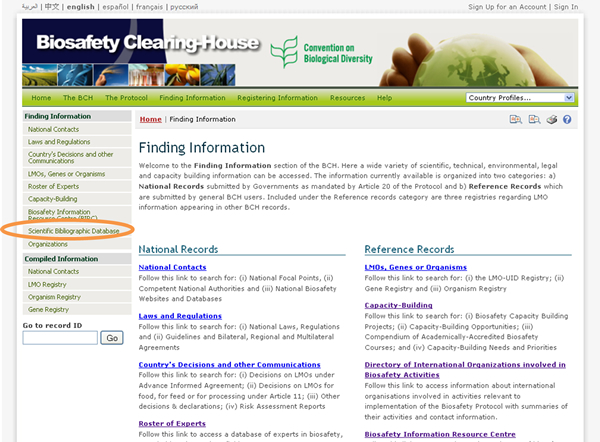
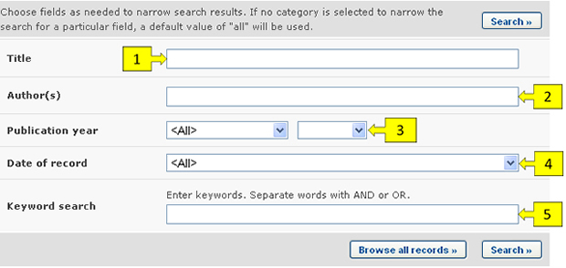
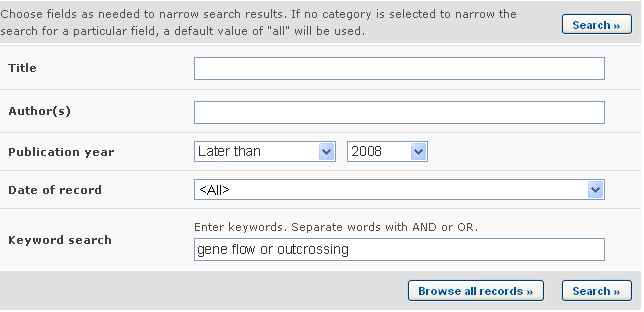

URL: http://bch.cbd.int/database/bibliographic-references/
Article 20 of the Protocol establishes the BCH in order to facilitate the exchange of information and experience with LMOs among parties, so as to assist them in implementing the Protocol. To help fulfill this role the BCH Central Portal contains information submitted by Parties, governments and organizations that is relevant to biosafety and implementation of the Protocol.
In addition to the Biosafety Information Resource Centre (BIRC), the BCH provides access to a bibliographic collection of scientific articles (full reference + abstract), published in national and international scientific periodicals from 1990 onwards, that are relevant to biosafety and risk assessment of biotechnology. The Scientific Bibliographic Database is hosted and managed by the International Centre for Genetic Engineering and Biotechnology (ICGEB) and has been made interoperable with the BCH.
The BCH search page for publications in the Scientific Bibliographic Database can be accessed using the link in the Finding Information drop down menu on the navigation bar, or the link in the left-hand menu of the Finding Information page or Scientific Bibliographic Database link in the text of that page.

On the Search the Scientific Bibliographic Database on Biosafety page there are several search criteria boxes:
-
Title: Keyword field to search by publication title.
-
Authors(s): Keyword field to search by authors
-
Publication year: Selection lists to narrow search results by year of publication. The first selection list specifies whether resources published earlier or later than the date specified in the second box are to be considered. If any of the two selection lists is left empty, then this field will not narrow the search results.
-
Date of record: Date field for narrowing the search results to a time interval
-
Keyword search: Keyword field for narrowing the results by keyword
See “Using the search pages” to learn about types of fields and their operation.

Example: A user wishes to identify recent scientific articles on gene flow from crops. The user selects (i) later than 2008 in the publication year boxes and (ii) enters gene flow OR outcrossing in the Keyword search. The search results are presented in alphabetical order based on the titles of the articles.


This picture was taken on February 2010 with the only purpose of providing an example on the usage of the BCH.
Assuming that the user finds a useful article by a certain author, the search can be refined by adding the author's name to the Author(s) search box. This will narrow the search results to recent articles by the same author regarding this subject.